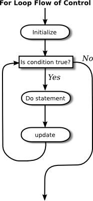

The for statement
We turn in this section to another type of loop, the for statement. Any for loop is equivalent to some while loop, so the language doesn't get any additional power by having for statements. But for a certain type of problem, a for loop can be easier to construct and easier to read than the corresponding while loop. It's quite possible that in real programs, for loops actually outnumber while loops (and I know of at least one person who only uses for loops).
The for statement makes a common type of while loop easier to write. Many while loops have the general form:
initialization
while ( continuation-condition ) {
statements
update
}For example, consider this example, copied from an example in Section 3.2:
years = 0; // initialize the variable years
while ( years < 5 ) { // condition for continuing loop
interest = principal * rate; //
principal += interest; // do three statements
System.out.println(principal); //
years++; // update the value of the variable, years
}This loop can be written as the following equivalent for statement:
for ( years = 0; years < 5; years++ ) {
interest = principal * rate;
principal += interest;
System.out.println(principal);
}The initialization, continuation condition, and updating have all been combined in the first line of the for loop. This keeps everything involved in the "control" of the loop in one place, which helps make the loop easier to read and understand. The for loop is executed in exactly the same way as the original code: The initialization part is executed once, before the loop begins. The continuation condition is executed before each execution of the loop (including the first execution), and the loop ends when this condition is false. The update part is executed at the end of each execution of the loop, just before jumping back to check the condition.
The formal syntax of the for statement is as follows:
for ( initialization; continuation-condition; update )
statement
or, using a block statement:
for ( initialization; continuation-condition; update ) {
statements
}The continuation-condition must be a boolean-valued expression. The initialization is usually a declaration or an assignment statement, but it can be any expression that would be allowed as a statement in a program. The update can be any simple statement, but is usually an increment, a decrement, or an assignment statement. Any of the three parts can be empty, but the two semicolons are required in any case. If the continuation condition is empty, it is treated as if it were "true," so the loop will be repeated forever or until it ends for some other reason, such as a break statement. (Some people like to begin an infinite loop with "for (;;)" instead of "while (true)".) Here's a flow control diagram for a for statement:

Usually, the initialization part of a for statement assigns a value to some variable, and the update changes the value of that variable with an assignment statement or with an increment or decrement operation. The value of the variable is tested in the continuation condition, and the loop ends when this condition evaluates to false. A variable used in this way is called a loop control variable. In the example given above, the loop control variable was years.
Certainly, the most common type of for loop is the counting loop, where a loop control variable takes on all integer values between some minimum and some maximum value. A counting loop has the form
for ( variable = min; variable <= max; variable++ ) {
statements
}where min and max are integer-valued expressions (usually constants). The variable takes on the values min, min+1, min+2, ..., max. The value of the loop control variable is often used in the body of the loop. The for loop at the beginning of this section is a counting loop in which the loop control variable, years, takes on the values 1, 2, 3, 4, 5. Here is an even simpler example, in which the numbers 1, 2, ..., 10 are displayed on standard output:
for ( N = 1 ; N <= 10 ; N++ )
System.out.println( N );For various reasons, Java programmers like to start counting at 0 instead of 1, and they tend to use a "<" in the condition, rather than a "<=". The following variation of the above loop prints out the ten numbers 0, 1, 2, ..., 9:
for ( N = 0 ; N < 10 ; N++ )
System.out.println( N );Using < instead of <= in the test, or vice versa, is a common source of off-by-one errors in programs. You should always stop and think, Do I want the final value to be processed or not?
It's easy to count down from 10 to 1 instead of counting up. Just start with 10, decrement the loop control variable instead of incrementing it, and continue as long as the variable is greater than or equal to one.
for ( N = 10 ; N >= 1 ; N-- )
System.out.println( N );Now, in fact, the official syntax of a for statement actually allows both the initialization part and the update part to consist of several expressions, separated by commas. So we can even count up from 1 to 10 and count down from 10 to 1 at the same time!
for ( i=1, j=10; i <= 10; i++, j-- ) {
System.out.printf("%5d", i); // Output i in a 5-character wide column.
System.out.printf("%5d", j); // Output j in a 5-character column.
System.out.println(); // and end the line.
}As a final introductory example, let's say that we want to use a for loop that prints out just the even numbers between 2 and 20, that is: 2, 4, 6, 8, 10, 12, 14, 16, 18, 20. There are several ways to do this. Just to show how even a very simple problem can be solved in many ways, here are four different solutions (three of which would get full credit):
(1) // There are 10 numbers to print.
// Use a for loop to count 1, 2,
// ..., 10. The numbers we want
// to print are 2*1, 2*2, ... 2*10.
for (N = 1; N <= 10; N++) {
System.out.println( 2*N );
}
(2) // Use a for loop that counts
// 2, 4, ..., 20 directly by
// adding 2 to N each time through
// the loop.
for (N = 2; N <= 20; N = N + 2) {
System.out.println( N );
}
(3) // Count off all the numbers
// 2, 3, 4, ..., 19, 20, but
// only print out the numbers
// that are even.
for (N = 2; N <= 20; N++) {
if ( N % 2 == 0 ) // is N even?
System.out.println( N );
}
(4) // Irritate the professor with
// a solution that follows the
// letter of this silly assignment
// while making fun of it.
for (N = 1; N <= 1; N++) {
System.out.println("2 4 6 8 10 12 14 16 18 20");
}
Perhaps it is worth stressing one more time that a for statement, like any statement except for a variable declaration, never occurs on its own in a real program. A statement must be inside the main routine of a program or inside some other subroutine. And that subroutine must be defined inside a class. I should also remind you that every variable must be declared before it can be used, and that includes the loop control variable in a for statement. In all the examples that you have seen so far in this section, the loop control variables should be declared to be of type int. It is not required that a loop control variable be an integer. Here, for example, is a for loop in which the variable, ch, is of type char, using the fact that the ++ operator can be applied to characters as well as to numbers:
// Print out the alphabet on one line of output.
char ch; // The loop control variable;
// one of the letters to be printed.
for ( ch = 'A'; ch <= 'Z'; ch++ )
System.out.print(ch);
System.out.println();Example: Counting Divisors
Let's look at a less trivial problem that can be solved with a for loop. If N and D are positive integers, we say that D is a divisor of N if the remainder when D is divided into N is zero. (Equivalently, we could say that N is an even multiple of D.) In terms of Java programming, D is a divisor of N if N % D is zero.
Let's write a program that inputs a positive integer, N, from the user and computes how many different divisors N has. The numbers that could possibly be divisors of N are 1, 2, ..., N. To compute the number of divisors of N, we can just test each possible divisor of N and count the ones that actually do divide N evenly. (This is a correct solution, but there are much more efficient ways to perform this task.) In pseudocode, the algorithm takes the form
Get a positive integer, N, from the user
Let divisorCount = 0
for each number, testDivisor, in the range from 1 to N:
if testDivisor is a divisor of N:
Count it by adding 1 to divisorCount
Output the countThis algorithm displays a common programming pattern that is used when some, but not all, of a sequence of items are to be processed. The general pattern is
for each item in the sequence:
if the item passes the test:
process itThe for loop in our divisor-counting algorithm can be translated into Java code as
for (testDivisor = 1; testDivisor <= N; testDivisor++) {
if ( N % testDivisor == 0 )
divisorCount++;
}On a modern computer, this loop can be executed very quickly. It is not impossible to run it even for the largest legal int value, 2147483647. (If you wanted to run it for even larger values, you could use variables of type long rather than int.) However, it does take a significant amount of time for very large numbers. So when I implemented this algorithm, I decided to output a dot every time the computer has tested ten million possible divisors. In the improved version of the program, there are two types of counting going on. We have to count the number of divisors and we also have to count the number of possible divisors that have been tested. So the program needs two counters. When the second counter reaches 10000000, the program outputs a '.' and resets the counter to zero so that we can start counting the next group of ten million. Reverting to pseudocode, the algorithm now looks like
Get a positive integer, N, from the user
Let divisorCount = 0 // Number of divisors found.
Let numberTested = 0 // Number of possible divisors tested
// since the last period was output.
for each number, testDivisor, in the range from 1 to N:
if testDivisor is a divisor of N:
Count it by adding 1 to divisorCount
Add 1 to numberTested
if numberTested is 10000000:
print out a '.'
Reset numberTested to 0
Output the countFinally, we can translate the algorithm into a complete Java program:
import textio.TextIO;
/**
* This program reads a positive integer from the user.
* It counts how many divisors that number has, and
* then it prints the result.
*/
public class CountDivisors {
public static void main(String[] args) {
int N; // A positive integer entered by the user.
// Divisors of this number will be counted.
int testDivisor; // A number between 1 and N that is a
// possible divisor of N.
int divisorCount; // Number of divisors of N that have been found.
int numberTested; // Used to count how many possible divisors
// of N have been tested. When the number
// reaches 10000000, a period is output and
// the value of numberTested is reset to zero.
/* Get a positive integer from the user. */
while (true) {
System.out.print("Enter a positive integer: ");
N = TextIO.getlnInt();
if (N > 0)
break;
System.out.println("That number is not positive. Please try again.");
}
/* Count the divisors, printing a "." after every 10000000 tests. */
divisorCount = 0;
numberTested = 0;
for (testDivisor = 1; testDivisor <= N; testDivisor++) {
if ( N % testDivisor == 0 )
divisorCount++;
numberTested++;
if (numberTested == 10000000) {
System.out.print('.');
numberTested = 0;
}
}
/* Display the result. */
System.out.println();
System.out.println("The number of divisors of " + N
+ " is " + divisorCount);
} // end main()
} // end class CountDivisors
Nested for Loops
Control structures in Java are statements that contain other, simpler statements. In particular, control structures can contain control structures. You've already seen several examples of if statements inside loops, and one example of a while loop inside another while, but any combination of one control structure inside another is possible. We say that one structure is nested inside another. You can even have multiple levels of nesting, such as a while loop inside an if statement inside another while loop. The syntax of Java does not set a limit on the number of levels of nesting. As a practical matter, though, it's difficult to understand a program that has more than a few levels of nesting, and it is a style rule that excessive nesting should be avoided.
Nested for loops arise naturally in many algorithms, and it is important to understand how they work. Let's look at a couple of examples. First, consider the problem of printing out a multiplication table like this one:
1 2 3 4 5 6 7 8 9 10 11 12
2 4 6 8 10 12 14 16 18 20 22 24
3 6 9 12 15 18 21 24 27 30 33 36
4 8 12 16 20 24 28 32 36 40 44 48
5 10 15 20 25 30 35 40 45 50 55 60
6 12 18 24 30 36 42 48 54 60 66 72
7 14 21 28 35 42 49 56 63 70 77 84
8 16 24 32 40 48 56 64 72 80 88 96
9 18 27 36 45 54 63 72 81 90 99 108
10 20 30 40 50 60 70 80 90 100 110 120
11 22 33 44 55 66 77 88 99 110 121 132
12 24 36 48 60 72 84 96 108 120 132 144The data in the table are arranged into 12 rows and 12 columns. The process of printing them out can be expressed in a pseudocode algorithm as
for each rowNumber = 1, 2, 3, ..., 12:
Print the first twelve multiples of rowNumber on one line
Output a carriage returnThe first step in the for loop can itself be expressed as a for loop. We can expand "Print the first twelve multiples of rowNumber on one line" as:
for N = 1, 2, 3, ..., 12:
Print N * rowNumberso a refined algorithm for printing the table has one for loop nested inside another:
for each rowNumber = 1, 2, 3, ..., 12:
for N = 1, 2, 3, ..., 12:
Print N * rowNumber
Output a carriage returnWe want to print the output in neat columns, with each output number taking up four spaces. This can be done using formatted output with format specifier %4d. Assuming that rowNumber and N have been declared to be variables of type int, the algorithm can be expressed in Java as
for ( rowNumber = 1; rowNumber <= 12; rowNumber++ ) {
for ( N = 1; N <= 12; N++ ) {
// print in 4-character columns
System.out.printf( "%4d", N * rowNumber ); // No carriage return !
}
System.out.println(); // Add a carriage return at end of the line.
}This section has been weighed down with lots of examples of numerical processing. For our next example, let's do some text processing. Consider the problem of finding which of the 26 letters of the alphabet occur in a given string. For example, the letters that occur in "Hello World" are D, E, H, L, O, R, and W. More specifically, we will write a program that will list all the letters contained in a string and will also count the number of different letters. The string will be input by the user. Let's start with a pseudocode algorithm for the program.
Ask the user to input a string
Read the response into a variable, str
Let count = 0 (for counting the number of different letters)
for each letter of the alphabet:
if the letter occurs in str:
Print the letter
Add 1 to count
Output the countSince we want to process the entire line of text that is entered by the user, we'll use TextIO.getln() to read it. The line of the algorithm that reads "for each letter of the alphabet" can be expressed as "for (letter='A'; letter<='Z'; letter++)". But the if statement inside the for loop needs still more thought before we can write the program. How do we check whether the given letter, letter, occurs in str? One idea is to look at each character in the string in turn, and check whether that character is equal to letter. We can get the i-th character of str with the function call str.charAt(i), where i ranges from 0 to str.length() - 1.
One more difficulty: A letter such as 'A' can occur in str in either upper or lower case, 'A' or 'a'. We have to check for both of these. But we can avoid this difficulty by converting str to upper case before processing it. Then, we only have to check for the upper case letter. We can now flesh out the algorithm fully:
Ask the user to input a string
Read the response into a variable, str
Convert str to upper case
Let count = 0
for letter = 'A', 'B', ..., 'Z':
for i = 0, 1, ..., str.length()-1:
if letter == str.charAt(i):
Print letter
Add 1 to count
break // jump out of the loop, to avoid counting letter twice
Output the countNote the use of break in the nested for loop. It is required to avoid printing or counting a given letter more than once (in the case where it occurs more than once in the string). The break statement breaks out of the inner for loop, but not the outer for loop. Upon executing the break, the computer continues the outer loop with the next value of letter. You should try to figure out exactly what count would be at the end of this program, if the break statement were omitted. Here is the complete program:
import textio.TextIO;
/**
* This program reads a line of text entered by the user.
* It prints a list of the letters that occur in the text,
* and it reports how many different letters were found.
*/
public class ListLetters {
public static void main(String[] args) {
String str; // Line of text entered by the user.
int count; // Number of different letters found in str.
char letter; // A letter of the alphabet.
System.out.println("Please type in a line of text.");
str = TextIO.getln();
str = str.toUpperCase();
count = 0;
System.out.println("Your input contains the following letters:");
System.out.println();
System.out.print(" ");
for ( letter = 'A'; letter <= 'Z'; letter++ ) {
int i; // Position of a character in str.
for ( i = 0; i < str.length(); i++ ) {
if ( letter == str.charAt(i) ) {
System.out.print(letter);
System.out.print(' ');
count++;
break;
}
}
}
System.out.println();
System.out.println();
System.out.println("There were " + count + " different letters.");
} // end main()
} // end class ListLetters
In fact, there is actually an easier way to determine whether a given letter occurs in a string, str. The built-in function str.indexOf(letter) will return -1 if letter does not occur in the string. It returns a number greater than or equal to zero if it does occur. So, we could check whether letter occurs in str simply by checking "if (str.indexOf(letter) >= 0)". If we used this technique in the above program, we wouldn't need a nested for loop. This gives you a preview of how subroutines can be used to deal with complexity.